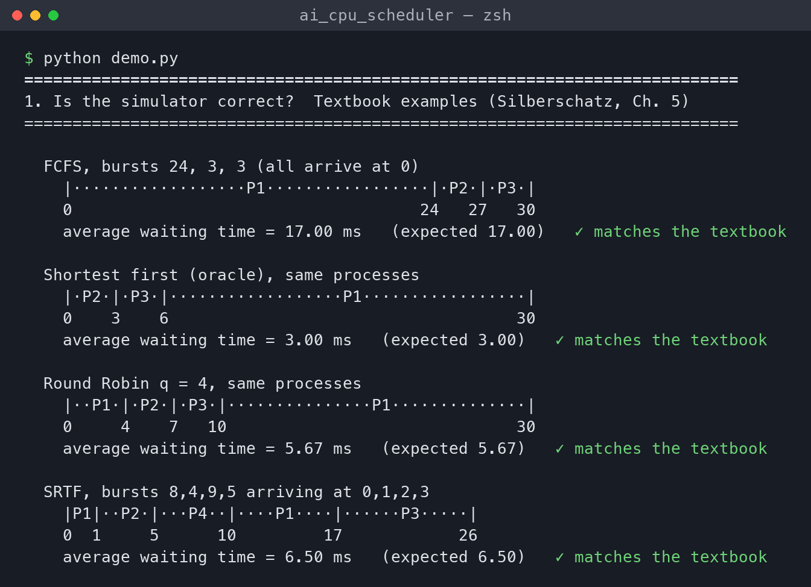
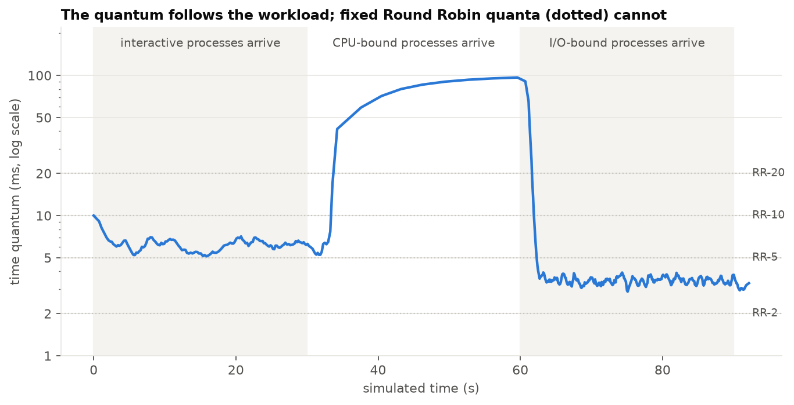

Operating Systems · B.Tech CSE, Third Year · Project Review
The CPU scheduler decides which ready process runs next and for how long. The classical policies are static. FCFS ignores burst length, so one long job delays every short one behind it (bursts 24, 3, 3 give a 17 ms average wait). SJF is optimal for average waiting time (3 ms on the same jobs), but needs the length of the next CPU burst, which is unknown when the decision is made. Round Robin uses a quantum fixed at configuration time: small quanta cause many context switches, large ones make the system sluggish. Real systems estimate bursts with exponential averaging, τ(n+1) = α·t(n) + (1−α)·τ(n), which uses only one process's own history and lags after a phase change (bursts 2, 2, 2, 2, 60, 60, 60 give guesses 2, 31, 45.5, 52.75).
Simulator. A Python event-driven engine (heapq event queue; events ARRIVAL, IO_DONE, SLICE_END) owns the clock and the process control blocks but makes no decisions. It calls a pluggable policy, so every scheduler sees identical arrivals, bursts, I/O times and a 0.1 ms context-switch cost. Only the engine and the oracle can see true burst lengths.
Predictor. Twelve features per process, all information a kernel already keeps: the last five bursts, the mean and standard deviation of past bursts, the exponential-average estimate, the last and mean I/O wait, bursts completed, and the last change in burst length. Four regressors were compared on 2,000 training processes, split by process to avoid leakage. Gradient boosting on log(burst) won: MAE 10.6 ms vs 12.4 ms for exponential averaging (14% lower), 0.5 ms per prediction. A logistic-regression classifier (macro-F1 0.94) labels processes as CPU-bound, I/O-bound or interactive.
Adaptive scheduler. The prediction is used twice:
The ageing term prevents starvation. The quantum rule automates the textbook guideline that about 80% of bursts should finish within one quantum. Error ratios are needed because predictions are averages and are much less spread out than real bursts. The percentile is lowered when the classifier sees mostly interactive processes and raised when it sees mostly CPU-bound ones. A feedback loop logs each burst's error and periodically refits the model.
About 2,400 lines of Python (NumPy, pandas, scikit-learn, Matplotlib). Modules: workload, engine, baselines, features, predictor, quantum, adaptive, metrics. All 37 unit tests pass. They cover the textbook examples, context-switch and I/O accounting, identical total CPU service across all schedulers, monotonic event times, the exponential-average values (6, 4, 6 → 8, 6, 6), a no-leakage check on features, the ageing example (50 − 0.1 × 400 = 10), the quantum percentile (8.4), and β = 0 reproducing SJF slice for slice.

python demo.py: the simulator reproduces FCFS 17, SJF 3, RR(q=4) 5.67 and SRTF 6.5 ms exactly.
Six workloads of 200 processes with Poisson arrivals at 85% CPU load: W1 CPU-bound, W2 I/O-bound, W3 interactive, W4 mixed (40/30/20/10% interactive/CPU/I/O/phase-changing), W5 phase-changing, W6 = W4 at 3× arrival rate. Eleven schedulers: FCFS, SJF-EMA, SRTF-EMA, RR at 2, 5, 10 and 20 ms, MLFQ (4/8/16 ms, boost every 200 ms), Oracle (SRTF with true bursts), Adaptive-EMA and Adaptive-ML. That makes 6 × 11 × 10 seeds = 660 paired runs, plus 120 ablation, 130 sweep and 150 switch-cost runs. Metrics: waiting, turnaround and response time, worst-case wait, context switches, utilisation, Jain fairness, starvation count and prediction error.
| Avg wait (ms), mean of 10 seeds | W1 | W2 | W3 | W4 | W5 | W6 |
|---|---|---|---|---|---|---|
| FCFS | 2,356 | 454 | 490 | 4,003 | 4,330 | 38,210 |
| SJF-EMA (main baseline) | 2,778 | 395 | 480 | 2,460 | 6,269 | 17,150 |
| RR-5 | 2,931 | 470 | 523 | 2,180 | 6,576 | 23,615 |
| RR-20 | 2,661 | 454 | 488 | 2,572 | 5,713 | 30,333 |
| MLFQ | 2,814 | 503 | 542 | 1,878 | 6,566 | 22,762 |
| Oracle (true bursts) | 1,697 | 370 | 283 | 1,204 | 4,617 | 12,820 |
| Adaptive-ML (ours) | 2,725 | 450 | 505 | 1,786 | 6,163 | 17,599 |
| Ours vs SJF-EMA: avg / worst wait | −2% / −56% | +14% / +1% | +5% / −27% | −27% / −23% | −2% / −53% | +3% / −2% |
On the mixed workload W4 Adaptive-ML waits 27% less than SJF-EMA and is better on all 10 seeds. It closes 54% of the gap to the oracle, cuts worst-case wait by 23%, and uses 61% fewer context switches than RR-5 (5,933 vs 15,328) while responding faster than RR-20 (15 vs 69 ms). Ageing roughly halves the worst-case wait on W1 and W5, and starved processes on W5 fall from 8.0 to 0.2 per run. The learned predictor is 12–22% more accurate than exponential averaging on every workload. The method loses on the all-I/O workload (+14%): bursts there are tiny and random, so there is nothing to predict beyond the mean, and preempting at a small quantum adds switches.
| Hypothesis (stated before the experiments) | Verdict |
|---|---|
| H1 Lower average wait than SJF-EMA on W4, W5, W6 | Partly: clearly on W4; W5 and W6 within noise |
| H2 Far fewer switches than small-quantum RR without slow response | Supported |
| H3 Lower worst-case wait than SJF-EMA and SRTF-EMA | Partly: 5 of 6 workloads (not W2) |
| H4 About equal to SJF-EMA on uniform W1, W2 | Partly: W1 yes (−2%), W2 no (+14%) |
| H5 Never beats the oracle | Supported (0 of 60 instances) |
| H6 Learned model more accurate than exponential averaging | Supported on all 6 workloads |
| H7 Removing ageing lowers average but raises worst-case wait | Partly: W4 yes; on W5 only the worst case changes (it doubles) |
An eleventh configuration (Adaptive-EMA) was added, so the planned 660 runs are now exact. The oracle is defined as preemptive SRTF with true bursts. β = 0.03 was tuned on separate seeds (100–102). The quantum uses prediction × error ratio. The optional /proc trace was dropped because macOS has no /proc. Limitations: simulation only (single CPU, no caches); synthetic workloads; 0.5 ms prediction latency is too slow for a kernel, so a real implementation would need a much smaller model. Next: test on traced real workloads and port the quantum controller to a teaching kernel such as xv6.
python3 -m venv .venv && source .venv/bin/activate && pip install -r requirements.txt, then pytest (tests), python demo.py (10-second live demo), python run_experiments.py and python analyse.py (full results in results/REPORT.md, figures in figures/).